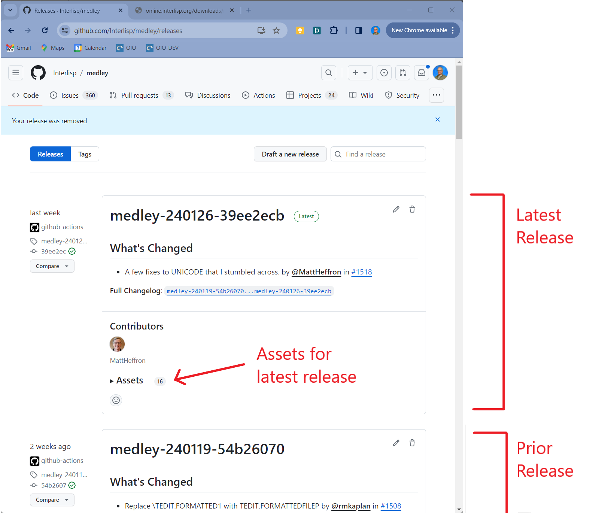
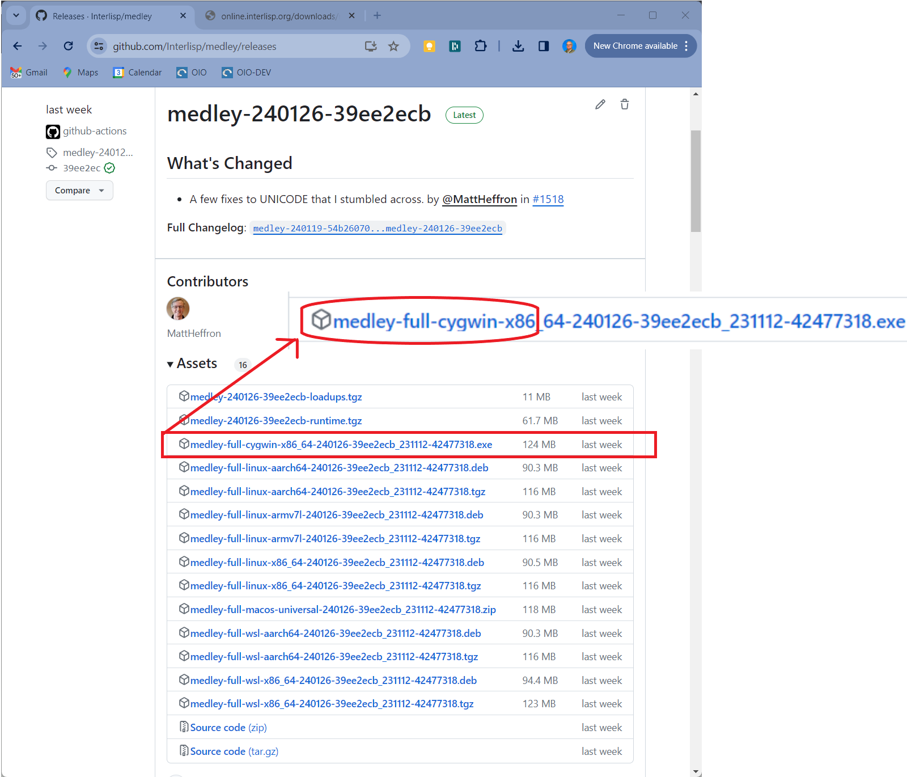

Download Windows 'native' Installer from Github
- Go to the Releases page for Interlisp/Medley on github.com. Here you will see a list of releases in reverse chronological order.

-
Choose the release you are interested in (most likely the release marked Latest) and click on the arrow next the word Assets to reveal the list of assets (i.e., installation files) for that release.
-
Click on the link that begins with medley-full-cygwin-X86_64 to download the Windows Installer.
